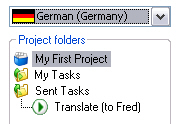

Creating a Project Package
When assigning tasks to e.g. translators and freelancers you will create so-called project packages. These are technically speaking ZIP files that carry the extension *.sdlppx. Project package files contain the elements of a project that are relevant for a particular translator/editor, i.e. the files to translate or localize (e.g. 3 particular files out of a total of 10), project TMs, reference documents, and potentially also termbase files, AutoSuggest Dictionaries. Through packages you can also split up a project between several translators/editors, e.g. assign the package for the French translation to translator A, the German translation to translator B, or assign only some files to a translator, if one person cannot handle all files for a particular language direction.
Assign a Manual Task and Create a Project Package
The screenshot below illustrates how a project package is created from Trados Studio.

Creating a project package involves assigning a manual task (e.g. Translate, Edit, Proofread) to a user. When assigning the task you define the following parameters:
- The package name
- An (optional) comment (e.g. "Make sure to use the latest Microsoft terminology")
- A due date by which the task should be completed and the result delivered
- The name of the user to whom the task should be assigned
In the following example, we implement a function called CreatePackage, which takes a FileBasedProject and the package file path string as parameter. Before creating the actual package, you need to create a manual task by leveraging the ManualTask class to create a task object by applying the CreateManualTask method to the project. This requires the following parameters:
- The name of the task as string, e.g. Translate, Edit, Proofread.
- The name of the user to whom the task should be assigned.
- The due date for this package (e.g. 3 days from the current date). Note that the package due date should not be later than the project due date. The package usually has to be delivered earlier, so that there is enough time for the project manager for e.g. sign-off, finalization, delivery.
- The ids of the files that this manual task involves. In the example below we assign all files for the target language German to this task.
ProjectFile[] packageFiles = project.GetTargetLanguageFiles(new Language(CultureInfo.GetCultureInfo("de-DE")));
ManualTask newTask = project.CreateManualTask(
"Translate",
"Fred",
DateTime.Now.AddDays(3),
packageFiles.GetIds());9
To actually create the project package, apply the CreateProjectPackage method to the project object. This method requires the following parameters:
- The id (guid) of the manual task that you created previously
- The project package name An optional comment (can be an empty string)
- The package options, which we retrieve by calling a separate helper function.
Below is an example that shows how to use the CreateProjectPackage method in order to create a package, which is programmatically an object based on the ProjectPackageCreation class:
ProjectPackageCreation projectPackage = project.CreateProjectPackage(
newTask.Id,
"Sample Package",
"Please hurry up, this is job is urgent!",
this.GetPackageOptions());
Afterwards, apply the SavePackageAs method to physically save the project package file at a specific location. This method requires the package id (which you can retrieve from the ProjectPackageCreation object and the full file name and path as parameters.
project.SavePackageAs(projectPackage.PackageId, packageFile);
Note
Even if you save the project package to a specific location, the package file will still be automatically created within the project folder strcture. Outgoing packages will be stored in a sub-folder called Packaged/Out.
Note
After creating a package, the manual task will be shown in Trados Studio as sent and assigned as illustrated in the screenshot below:

Configure the Project Package Options
Apart from the above mentioned parameters there are various other options that you may configure for a project package, e.g. whether or not to include termbases and/or AutoSuggest Dictionaries. The screenshot below shows the project package options that you can set in Trados Studio:

To configure the project package options programmatically, implement a separate helper function called GetPackageOptions, which returns a ProjectPackageCreationOptions object:
ProjectPackageCreationOptions options = new ProjectPackageCreationOptions();
Resources to Include
The properties in the code example below demonstrate which resources you can optionally include in a package:
- You may have the main TM(s) included alongside or instead of the project TMs. The main TMs usually yield more results during concordance searches, however, as these TMs tend to be very big they will usually increase the package size considerably.
- You may also decide to include any AutoSuggest dictionaries for subsegment matching. Note that there are no project AutoSuggest dictionaries. If you provide this resource, the full AutoSuggest dictionaries will be included, which usually increased the package size considerably.
- If your project is associated with any file-based termbases, they can be included in the package as well. Here, the same applies as for the AutoSuggest dictionaries, i.e. there are no project termbases, which means that you will always include the full termbase (*.sdltb) files.
options.IncludeAutoSuggestDictionaries = false;
options.IncludeMainTranslationMemories = false;
options.RemoveServerBasedTranslationMemories = false;
options.IncludeTermbases = true;
Remove Automated Translation Providers
If your project is associated with any automated online translation providers (e.g. Google Translate), you may to decide not to include the links to those online resources in the project package. The reason is that translators tend to download the package and then process its content while not connected to the Internet, which means that they cannot use any online resources.
options.RemoveAutomatedTranslationProviders = true;
Recompute Analysis Statistics and Project TM Options
The following sample code demonstrates the use of two further options:
You may decide to recompute the analysis statistics, if a translator only receives part of the files for a particular target language. Example: Your project contains 10 files to translate. There are repeated segments between files 1 and 7. However, the translator who receives this package will only get files 1 to 5, i.e. not file 7. This means that for this package the cross-file repetition analysis for the whole set of 10 files will not be correct. In this case, it makes sense to re-compute the analysis statistics, so that only the cross-file repetitions of the 5 package files are taken into account.
Usually, the package contains the relevant project TM(s), i.e. subsets of the original main TM(s) that contain only the translation units that are relevant for the project files. You may want to re-create the project TM(s) when creating the package for similar reasons as the re-computation of the analysis statistics. Example: Let us assume again that your project contains 10 files to translate. When setting up the project you created a project TM that applies to those 10 files. However, the recipient of your package will only get the first 5 files, as you need to split up the job among two translators. If you decide to re-create the project TM(s), these will contain only the TUs that are relevant for the 5 files that are going to be included in your package. Through the ProjectTranslationMemoryPackageOptions class, you can select among the following options:
- CreateNew: Re-create the project TM(s) for the files of this particular package
- UseExisting: Simply include the project TM(s) that were created during the project set-up (i.e. the project TMs as they exist currently)
- None: Do not include any project TMs at all
options.RecomputeAnalysisStatistics = true;
options.ProjectTranslationMemoryOptions = ProjectTranslationMemoryPackageOptions.CreateNew;
Finally, do not forget to return the ProjectPackageCreationOptions object:
return options;
Check the Project Package Creation Status
It may happen that the package creation fails for some reason (e.g. the project TMs cannot be created, or any files to include in the package have accidentally been deleted or have became corrupted). This is why you should check for any events during the project package creation, and output a message to the user if required.
The following sample code leverages the PackageStatus class to check the project package status. It throws an error message if in the end the package status is not Completed:
bool packageIsCreated = false;
while (!packageIsCreated)
{
switch (projectPackage.Status)
{
case PackageStatus.Cancelling:
case PackageStatus.InProgress:
case PackageStatus.Scheduled:
case PackageStatus.NotStarted:
packageIsCreated = false;
break;
case PackageStatus.Cancelled:
case PackageStatus.Completed:
case PackageStatus.Failed:
case PackageStatus.Invalid:
packageIsCreated = true;
break;
default:
break;
}
}
if (projectPackage.Status != PackageStatus.Completed)
{
throw new Exception("A problem occurred during package creation.");
}
Putting it All Together
The complete functions should now look as shown below:
public void CreatePackage(FileBasedProject project, string packageFile)
{
#region "CreateManualTask"
ProjectFile[] packageFiles = project.GetTargetLanguageFiles(new Language(CultureInfo.GetCultureInfo("de-DE")));
ManualTask newTask = project.CreateManualTask(
"Translate",
"Fred",
DateTime.Now.AddDays(3),
packageFiles.GetIds());
#endregion
#region "CreateProjectPackage"
ProjectPackageCreation projectPackage = project.CreateProjectPackage(
newTask.Id,
"Sample Package",
"Please hurry up, this is job is urgent!",
this.GetPackageOptions());
#endregion
#region "PackageStatus"
bool packageIsCreated = false;
while (!packageIsCreated)
{
switch (projectPackage.Status)
{
case PackageStatus.Cancelling:
case PackageStatus.InProgress:
case PackageStatus.Scheduled:
case PackageStatus.NotStarted:
packageIsCreated = false;
break;
case PackageStatus.Cancelled:
case PackageStatus.Completed:
case PackageStatus.Failed:
case PackageStatus.Invalid:
packageIsCreated = true;
break;
default:
break;
}
}
if (projectPackage.Status != PackageStatus.Completed)
{
throw new Exception("A problem occurred during package creation.");
}
#endregion
#region "SavePackage"
project.SavePackageAs(projectPackage.PackageId, packageFile);
#endregion
}
private ProjectPackageCreationOptions GetPackageOptions()
{
#region "ProjectPackageCreationOptions"
ProjectPackageCreationOptions options = new ProjectPackageCreationOptions();
#endregion
#region "IncludeRessources"
options.IncludeAutoSuggestDictionaries = false;
options.IncludeMainTranslationMemories = false;
options.RemoveServerBasedTranslationMemories = false;
options.IncludeTermbases = true;
#endregion
#region "RemoveAutomatedTranslationProviders"
options.RemoveAutomatedTranslationProviders = true;
#endregion
#region "RecomputeAnalysisStatistics"
options.RecomputeAnalysisStatistics = true;
options.ProjectTranslationMemoryOptions = ProjectTranslationMemoryPackageOptions.CreateNew;
#endregion
#region "ReturnOptions"
return options;
#endregion
}